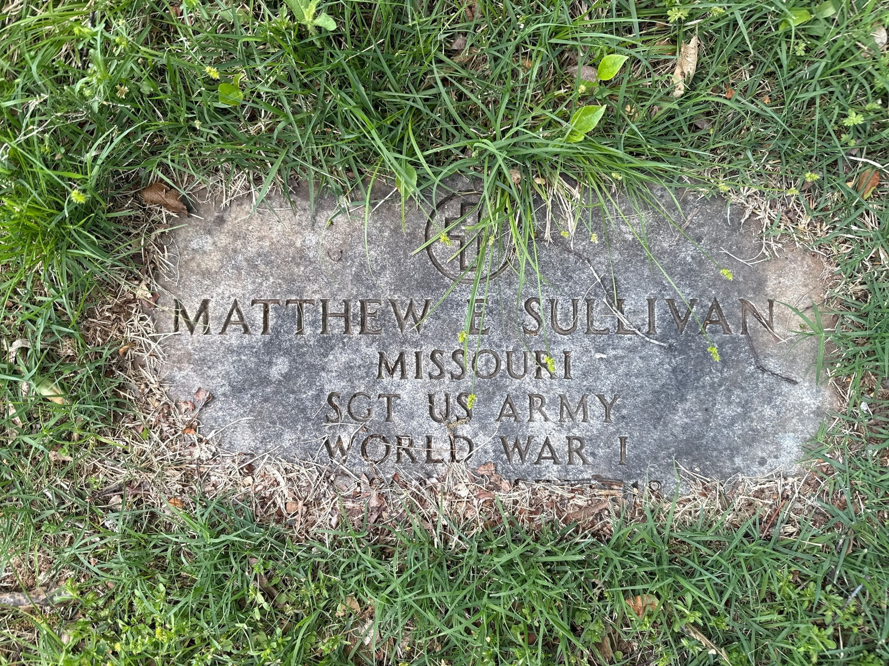
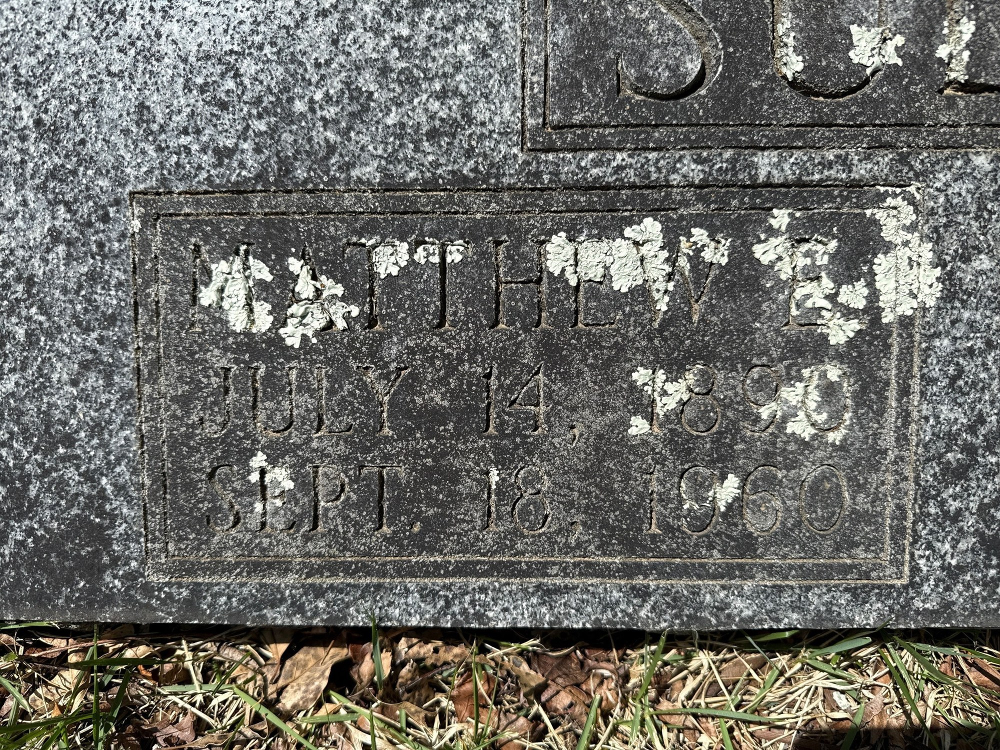
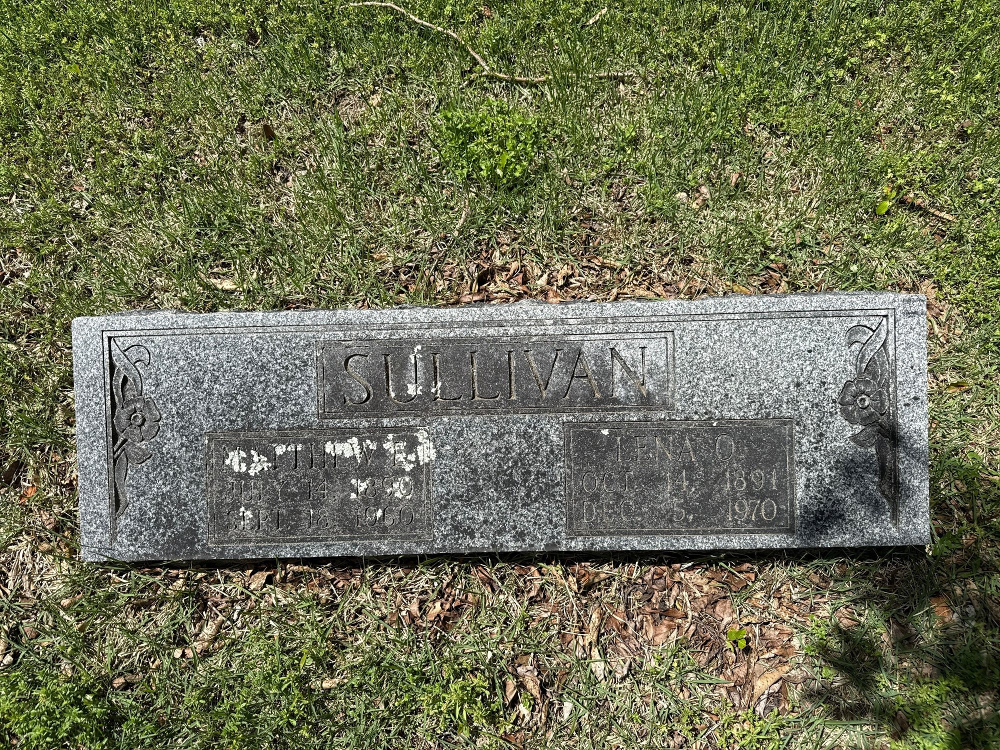
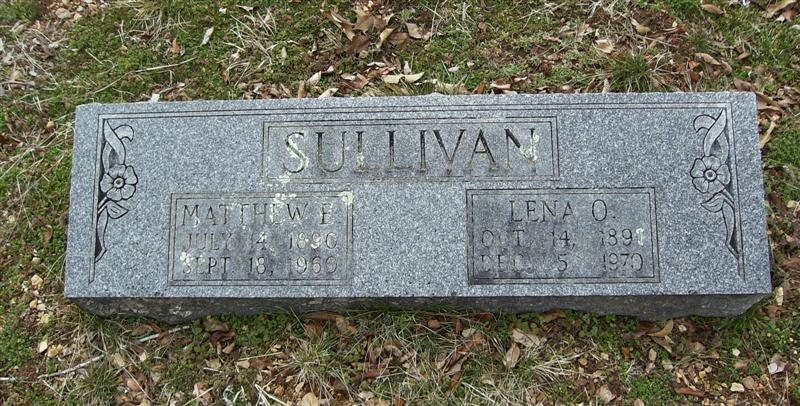

Matthew E. Sullivan
Life dates not fully established
Quick Facts
Immediate Family
Parents
- Unknown
Spouses
Children
- Martha J. (Sullivan) Lewis (identified by her obituary as daughter)
- Mary Jane Schuab
- Dorothy Sullivan
- Matthew Edward Sullivan Jr.
- James S. Sullivan
- Robert J. Sullivan
- Dan J. Sullivan
- Jo Ann Graham
- Elizabeth Wright
- Daniel G. Sullivan, 18, and Joann Sullivan, 16 (1950 census; possible matches for Dan J. and Jo Ann Graham are unresolved)
Siblings
- Unknown
Family Relationship Notes
The original 1950 census sheet shows Matthew E. Sullivan, 59, with wife Lena O., 58, and children Daniel G., 18, and Joann, 16, in Lesterville Township. Martha’s 2014 obituary identifies her parents as Matthew and Lena, née Spencer, Sullivan, and names eight siblings.
Find a Grave identifies Matthew Edward Sullivan Jr., born 14 July 1890 in St. Louis and died 18 September 1960 in Bonne Terre, as spouse of Lena O. Sullivan, buried at Lesterville Cemetery. Lena’s linked memorial lists Martha J. among the children. These independent-looking family memorial entries are derivative, but their dates/location align with the census and Martha’s obituary and strongly identify this couple as Martha’s parents. “Matthew E.” / “Matthew Edward Jr.” are retained as source name forms.
The memorial set includes a shared Matthew/Lena headstone, Matthew’s separate U.S. Army World War I marker, plaque close-ups, and an earlier cemetery photo. These are now archived; none is a family snapshot or portrait.
The census’s Daniel G. and Joann may correspond to Martha’s siblings Dan J. Sullivan and Jo Ann Graham; the initials and later surname differ, so they remain separate source forms. Find a Grave’s Lena page gives another child list that does not fully agree with the 2014 obituary; preserve rather than reconcile those variants.
On Family Tree Sites
No independently verified tree profile is linked.
Life Timeline
About 1891
Born in Missouri, estimated from age 59 in the 1950 census.
4 Apr 1950
Enumerated in Lesterville Township with wife Lena O. and children Daniel G. and Joann.
Life Story
Matthew E. Sullivan appears in the 1950 census with wife Lena and children Daniel G. (18) and Joann (16) in Lesterville Township. Find a Grave identifies the likely same man as Matthew Edward Sullivan Jr., born 14 July 1890 and died 18 September 1960, buried at Lesterville Cemetery; its memorial describes him as a service-station operator and World War I veteran. Martha’s 2014 obituary names Matthew and Lena (Spencer) Sullivan as her parents. The census records farming in 1950, so the occupational source forms are both retained.
Photo Gallery






Sources and Evidence
- 1950 U.S. Census, Reynolds County, Missouri, ED 90-5, sheet 4 (NARA original image), enumerated 4 April 1950; household 26, Matthew E. Sullivan, Lena O., Daniel G. (18) and Joann (16). Image reviewed directly.
- Martha J. Lewis obituary, 2014: identifies her parents Matthew and Lena (Spencer) Sullivan and names her siblings.
- FamilySearch 1950 census index search for Matthew Sullivan / Lena, listing Daniel G. and Joann. Index corroborates the household but does not resolve the sibling name variants.
- Find a Grave memorial for Matthew Edward Sullivan Jr.: 14 Jul. 1890–18 Sep. 1960; Lesterville Cemetery; spouse Lena O. Sullivan.
- Matthew memorial photo tab, four images by Cathy Hill and ancestorhunter.
- Find a Grave memorial for Lena O. Sullivan: 14 Oct. 1891–5 Dec. 1970, Lesterville Cemetery; memorial text lists Martha J. among children.

Person Archive
Browse the records, source notes, photos, and clippings saved for this person in the American Bloodline archive.
Research Notes and Open Questions
- Find a Grave memorials give Matthew Edward Sullivan Jr.’s dates and burial and link him as spouse to Lena O. Sullivan. Daughter Martha is named on Lena’s memorial. This is a strong working identification of Martha’s parents, but the memorial family connections are derivative.
- The Find a Grave tombstone gives 14 July 1890–18 September 1960; the 1950 census age 59 is compatible. His own parents and siblings are not yet established. The memorial text says his father was also Matthew Sullivan; treat that as a lead only.
- Occupation sources differ: the 1950 census records farmer; the memorial text calls him a service-station operator and a World War I veteran. Preserve those source distinctions.
- Martha’s obituary names eight siblings. Daniel G. and Joann in the 1950 census may be Dan J. and Jo Ann Graham, but initials/surname differ; do not merge. The Lena memorial’s child list (Betty L., Matthew, James S., Martha J., Robert J., Darriel G., Joy Ann) does not fully align with Martha’s obituary list; keep both attributed and unresolved.
- No individual portrait for Matthew was found in the memorial tabs reviewed. His individual WWI marker and all shared-marker views are archived; the shared Sullivan marker is used for the profile hero.
DNA
No DNA matches linked yet.
Family Notes
No Family Notes link is listed on this profile.
Profile created 24 November 2026 from an inspected 1950 census image and Martha Lewis’s obituary.